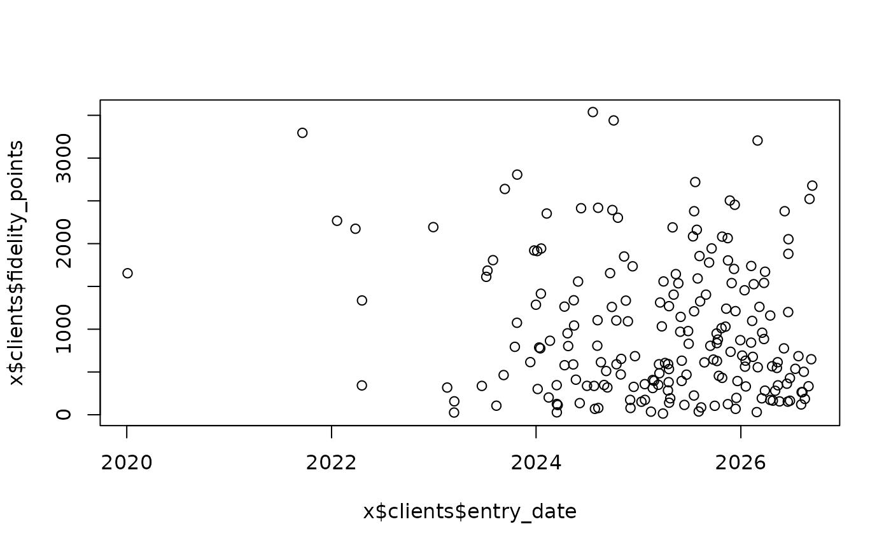
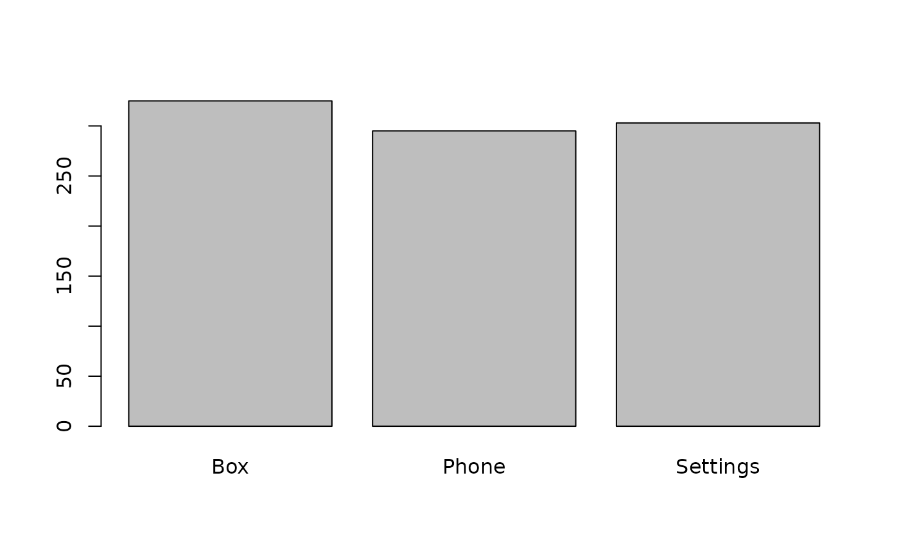
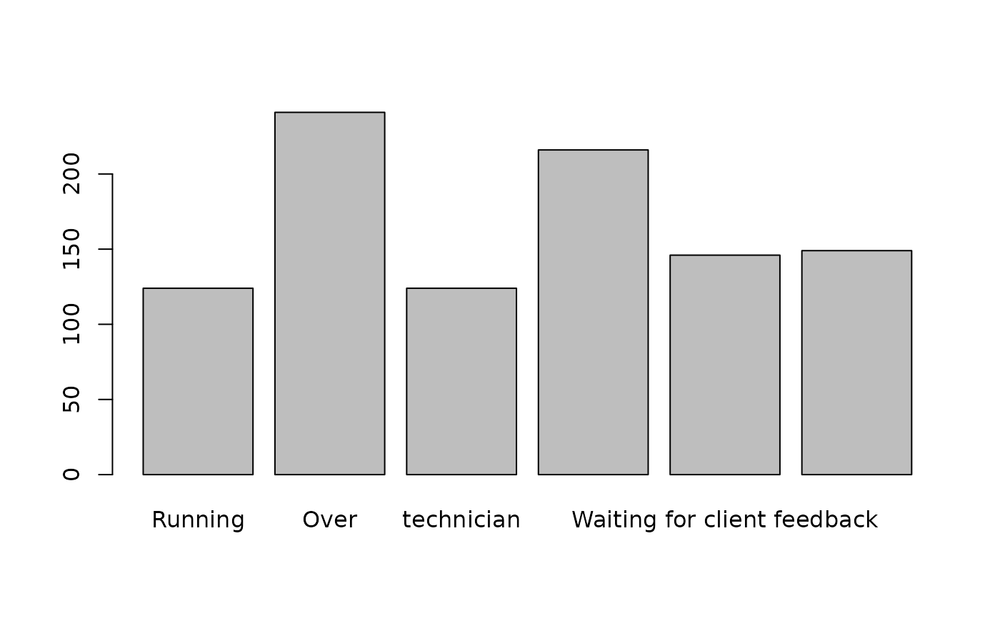

Une fausse base client de ticket Telecom
Usage
fake_ticket_client(
vol,
x,
n = 200,
split = FALSE,
seed = 2811,
local = c("en_US", "fr_FR")
)
Arguments
- vol
le nombre de tickets a retourner
- x
Optionnal. fake client data base
- n
Number of clients in the client database if x not provided
- split
la base doit elle être separee en deux ?
- seed
fixe la graine aleatoire
- local
the local of the base. Currently supported : "fr_FR" and "en_US".
Value
A dataframe of fake tickets.
Details
Same client can have multiple tickets
Some clients are more sampled than others
Some types are more sampled than others
Some etat are more sampled than others
Examples
x <- fake_ticket_client(1000, split = TRUE)
plot(x$clients$entry_date, x$clients$fidelity_points)

barplot(table(x$tickets$type))

barplot(table(x$tickets$state))
